OpenRefine
Table of Contents
Abstract
OpenRefine is an open-source tool for cleaning (meta)data. It converts unstructured data into machine-readable formats and supports the integration of additional information from sources such as GND or Wikidata via plugins. The scripting language of OpenRefine, GREL (General Refine Expression Language), is relatively easy to learn compared to programming languages like Python. One example of how OpenRefine can be used is to prepare metadata in the Correspondence Metadata Interchange Format (CMIF) for the web service correspSearch. OpenRefine helps to clean and standardise metadata and organise information. This makes it a useful tool for digital projects with historical data and scholarly editions.
Reviewerin
Marthe Küster hat Bibliotheks- und Informationswissenschaft sowie Geschichtswissenschaften (B.A.) und Information Science (M.A.) an der Humboldt-Universität zu Berlin studiert. Von 2022 bis 2025 war sie studentische Hilfskraft bei TELOTA an der Berlin-Brandenburgischen Akademie der Wissenschaften und hat dort unter anderem beim Webservice "Briefeditionen durchsuchen und vernetzen" mitgewirkt. Seit Dezember 2025 ist sie Wissenschaftliche Mitarbeiterin am Lehrstuhl für Digital History in Berlin für das Projekt QUADRIGA Datenkompetenzzentrum.
Einleitung
Im Bereich der historischen Daten und der Editionswissenschaft stellt sich häufig die Frage, wie die Metadaten standardisiert und maschinenlesbar gemacht werden können. Das ist eine wesentliche Voraussetzung, um Daten effizient zu visualisieren und zu analysieren. Ein nützliches Tool für diese Aufgabe ist OpenRefine. Es eignet sich zur Bereinigung großer Datenmengen und bietet im Gegensatz zu Excel Spreadsheets die Option mithilfe der General Refine Expression Language (GREL) die Daten zu modellieren und mit Linked Data anzureichern. Auch ermöglicht die Facettenfunktion von OpenRefine einen schnellen Überblick über die Daten zu erhalten. Ein weiterer Vorteil von OpenRefine ist, dass der Quelltext open source ist und kostenlos genutzt oder weiterentwickelt werden kann. Die Daten bleiben lokal auf dem Rechner und es ist möglich, OpenRefine in mehreren Tabs parallel zu verwenden (Dreßen and Sacher 2023). Grundsätzlich können Daten auch mit Programmiersprachen wie Python bereinigt werden. OpenRefine ist jedoch durch seine visuelle Oberfläche für Wissenschaftler*innen auch ohne umfangreiche Programmierkenntnisse nutzbar und speziell für die Bereinigung von Daten entwickelt.
Die Idee für ein Open-Source-Tool zur Bereinigung großer Datenmengen stammt von Metaweb Technologies und wurde von David Huynh bis Mai 2010 unter dem Namen Freebase Gridworks entwickelt. Das Tool diente dazu, Daten umzuwandeln und zu bereinigen, um diese in Freebase, einer Wissensdatenbank von Metaweb, zu importieren. Im Juli 2010 übernahm Google Metaweb, woraufhin das Tool in Google Refine umbenannt und mit zusätzlichen Funktionen erweitert wurde. Im Jahr 2012 übertrug Google die Projektleitung an die Open-Source-Community, wodurch das Tool in OpenRefine umbenannt und nach GitHub1 verschoben wurde. In den darauffolgenden Jahren gewann OpenRefine zunehmend an Beliebtheit, insbesondere bei Wissenschaftler*innen, Bibliotheken und Kultureinrichtungen. Seit 2017 ermöglicht ein Plug-In die Anreicherung von Daten aus Wikidata. Seit 2018 erhielt OpenRefine nach eigenen Angaben finanzielle Unterstützungen von der Google News Initiative, der Chang Zuckerberg Initiative, der Wikimedia Foundation und der Nationalen Forschungsdateninfrastruktur (NFDI).2
OpenRefine verfügt über eine Dokumentation, die einen guten Einstieg in die Arbeit mit dem Tool bietet. In der Dokumentation wird beschrieben, wie OpenRefine installiert wird, worauf bei der Nutzung zu achten ist und wie ein Projekt gestartet wird. Zudem werden Anleitungen zur Untersuchung, Umwandlung und zum Abgleich (Reconciling) von Daten angeboten. Auch die Verwendung von Wikibase, Wikidata und Wikimedia Commons im Zusammenhang mit OpenRefine wird erläutert. Abschließend wird erklärt, wie Daten exportiert werden und man zur Weiterentwicklung von OpenRefine beitragen kann.3 OpenRefine arbeitet im Browser. Laut der Dokumentation sind am besten Browser geeignet, die auf WebKit basieren. Dazu gehören Google Chrome, Chromium, Opera, Microsoft Edge und Safari. In dem später im Text behandelten Fallbeispiel wurde allerdings mit Firefox gearbeitet und auch hier kam es zu keinen Problemen aufgrund des Browsers. Ein Internetzugang ist nur nötig, um Daten ins Internet zu importieren, zu exportieren oder Daten über einen Webservice abzugleichen.4 Neben der offiziellen Dokumentation von OpenRefine gibt es Videotutorials und Onlinekurse, die von verschiedenen Anbietern veröffentlicht wurden und die Arbeitsschritte mit OpenRefine anhand von Fallbeispielen visualisieren.5
Jeder Datensatz hat seine eigenen Besonderheiten und muss individuell bearbeitet werden. Um ein besseres Verständnis dafür zu vermitteln, wie OpenRefine unterstützen kann und wo die Grenzen dieses Tools liegen, betrachten wir ein konkretes Anwendungsbeispiel: Korrespondenzmetadaten aufbereiten für correspSearch. Der Webservice correspSearch ermöglicht es, Verzeichnisse verschiedener digitaler und gedruckter Briefeditionen zu durchsuchen (Dumont et al. 2025). Nutzende können nach Sender und Empfänger sowie nach Ort, Datum und weiteren Faktoren wie Geschlecht oder Beruf recherchieren. CorrespSearch aggregiert Briefmetadaten aus verteilten Repositorien und stellt diese auch über eine offene Schnittstelle zur Verfügung. Voraussetzung ist, dass die Briefmetadaten im TEI-XML-basierten „Correspondence Metadata Interchange Format” (CMIF) vorliegen, das seit 2015 im Rahmen der Correspondence Special Interest Group der Text Encoding Initiative entwickelt wird (TEI Correspondence SIG 2025). Sind die Briefmetadaten schon maschinenlesbar, wie es bei digitalen Editionen der Fall ist, ist ein Tool wie OpenRefine nicht nötig. OpenRefine kommt u.a. zum Einsatz, wenn gedruckte Editionen ein Briefverzeichnis aufweisen, das in PDF-Form vorliegt und mit einfachen Mitteln kopierbar ist oder die Briefe in Tabellenform bereits erfasst wurden. Die basalen Informationen zum Brief (Absender*in, Empfänger*in, Ort, Datum) werden mit Hilfe von OpenRefine strukturiert, bereinigt und aufbereitet. Im Anschluss wird die so entstandene Tabelle mit Hilfe eines weiteren Dienstes in eine CMIF-Datei konvertiert.
Da OpenRefine lokal auf dem Rechner läuft, kann ein zu kleiner Speicherplatz bzw. ein zu großer Datensatz das Programm stark verlangsamen.6 In der OpenRefine-Dokumentation wird ein Datensatz als „groß“ definiert, wenn er über 50 Megabyte oder mehr als eine Million Zellen hat. Abhängig von der Anzahl der Spalten, können mehr oder weniger Zeilen problemlos bearbeitet werden. Standardmäßig verwendet OpenRefine 1 GB Arbeitsspeicher. Bei Bedarf kann das Programm aber auch so konfiguriert werden, das mehr Arbeitsspeicher verwendet wird (sofern verfügbar).7 Große Datensätze können in kleinere Datensatzeinheiten geteilt und bearbeitet werden. Eine andere Möglichkeit ist ein hybrides Vorgehen, wo die erste Mustererkennung und finale Bereinigung mit OpenRefine erfolgt, aber die Massenverarbeitung über andere Wege, wie einem Python-Skript.
Die Nutzung von OpenRefine ist sinnvoll, wenn die Daten in digitaler Form vorliegen, aber wenig strukturiert und unbereinigt sind. Das bedeutet, dass die Datumsangaben beispielsweise nicht in einem maschinenlesbaren Format vorliegen oder die Orts- und Personennamen keine zugewiesene ID haben oder in einem ungeeigneten Format sind. Die Namen sind abgekürzt, falsch geschrieben oder der Vor- und Nachname ist in einer ungewünschten Reihenfolge. Das alles kann mit einfachen Mitteln mit OpenRefine behoben werden. Damit die Nutzung von OpenRefine lohnenswert ist, sollte es sich um eine größere Anzahl an Datensätzen handeln. Die Einarbeitungszeit für das Tool ist nicht zu unterschätzen. Besonders für Plugins, die Skriptsprache GREL und die Facetten sollte dabei Zeit eingeplant werden. Dennoch ist GREL als Skriptsprache einfacher zu lernen, als eine Programmiersprache wie Python, die je nach Fragestellung mindestens das Gleiche leisten kann wie GREL. Bei kleineren Datensätzen kann das manuelle Bereinigen oder die Nutzung von regulären Ausdrücken über Notepad++ zeitsparender sein. Am einfachsten ist es, wenn die zu bereinigenden Metadaten im CSV-Format, in zeilenbasierten Textdateien oder als Excel-Dateien vorliegen. OpenRefine erlaubt auch XML, JSON oder MARC als Importformat. Diese Dateien können bei der Umwandlung in ein Tabellenformat durch die Verästelung aber Probleme bereiten. Aus OpenRefine können CSV-, TSV-, ODF-, HTML- und Exceldateien im Tabellenformat unkompliziert exportiert werden. Des Weiteren ist es möglich Templates zu erstellen, die die Tabelle in andere Dateiformate umwandeln.
Schließlich kann OpenRefine dabei unterstützen große Datenmengen zu standardisieren und in Wikidata neu einzuspeisen oder bereits existierende Wikidataeinträge zu bearbeiten (Wikimedia Foundation 2024). Auch bei anderen Datenbanken wie FactGrid können auf diesem Weg Daten eingespeist bzw. angereichert werden (Factgrid 2023).
Die Arbeit mit OpenRefine
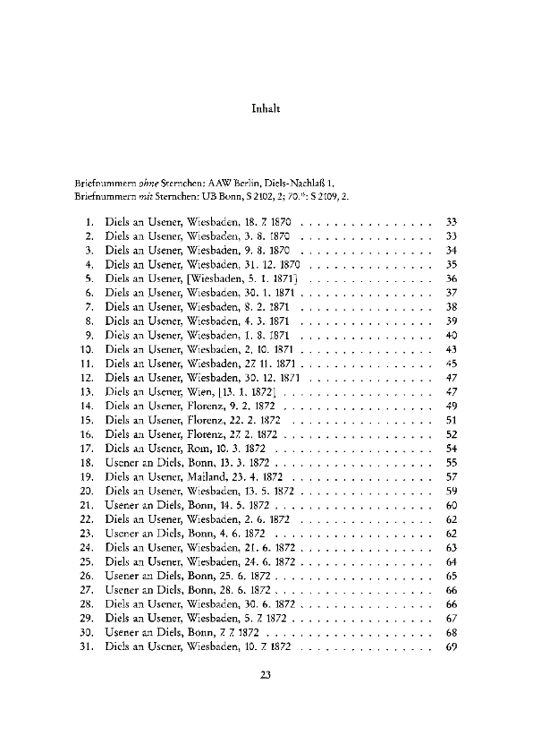 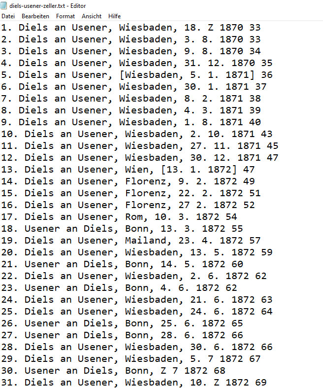
Spalten
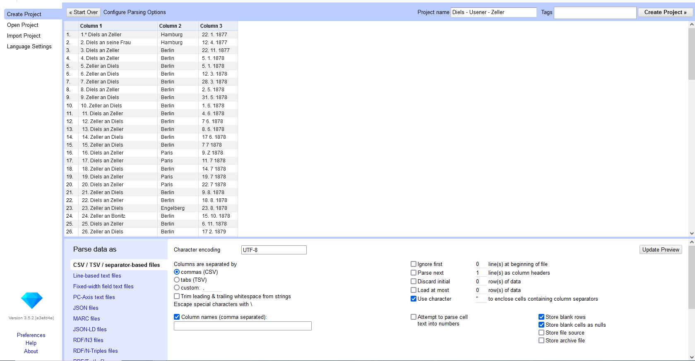 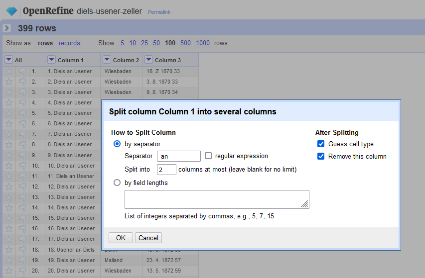 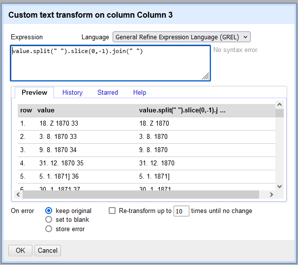value.split(" ").slice(0,-1).join(" ") (siehe Abb. 5).
Es handelt sich dabei um GREL, die JavaScript ähnelt und gut dafür geeignet ist,
Strings umzuwandeln oder mathematische Berechnungen durchzuführen.8
Das Correspondence Metadata Interchange Format (CMIF), das
correspSearch benötigt, ist TEI-XML basiert. Um die Daten aus einer
Tabellenstruktur in CMIF zu überführen wird das Skript CSV2CMI verwendet (Rettinghaus 2025), das von der Sächsischen
Akademie der Wissenschaften auch als Webservice angeboten wird (Sächsische Akademie der Wissenschaften o.J.). CSV2CMI erwartet dabei
standardisierte Spaltennamen und bestimmte Werte (Nummern, Text, Datumsangaben,
Weblinks). Sollten Daten nicht vorhanden sein, wie für den Ort des Empfängers
(addresseePlace), dann bleibt die Zelle in der Spalte leer. Hat
eine Spalte ein bis mehrere Werte - wie es bei Personenspalten häufig ist - werden
die Namen oder GND-URLs durch einen selbstgewählten Delimiter, wie den geraden
Trennstrich |, getrennt. Vor und nach dem Delimiter sollte kein
Leerzeichen stehen, ebenso wie vor und nach Einträgen in den Zellen. Ist das der
Fall, können die Leerzeichen über den Pfeil im Spaltenkopf ➔ edit cells ➔ common
transforms ➔ trim leading and trailing whitespace entfernt werden.
Übersicht über die Spalten und die erwarteten Werte für den csv2cmi Webservice:
| key | Korrespondenznummer |
| edition | Edition (UUID-Nummer, die mit einem Buchstaben beginnt – die genauen Editionsangaben werden über den csv2cmi Webservice eingetragen) |
| sender | Ein bis mehrere Absender |
| senderID | Ein bis mehrere GND-URLs der Absender |
| senderPlace | Ort der Absender |
| senderPlaceID | GeoNames URL vom Ort des Absenders |
| senderDate | Absendedatum standardisiert (yyyy-MM-dd) |
| senderDateText | Absendedatum Text (z.B. dd.MM.yyyy) |
| addressee | Ein bis mehrere Empfänger |
| addresseeID | Ein bis mehrere GND-URLs der Empfänger |
| addresseePlace | Ort der Empfänger |
| addresseePlaceID | GeoNames URL vom Ort des Empfängers |
| addresseeDate | Empfangsdatum standardisiert (yyyy-MM-dd) |
| addresseeDateText | Empfangsdatum Text |
| page | Seitenzahl (Nur nötig, wenn es keine Korrespondesnummer gibt) |
| note | Anmerkung |
Personen- und Ortsnamen
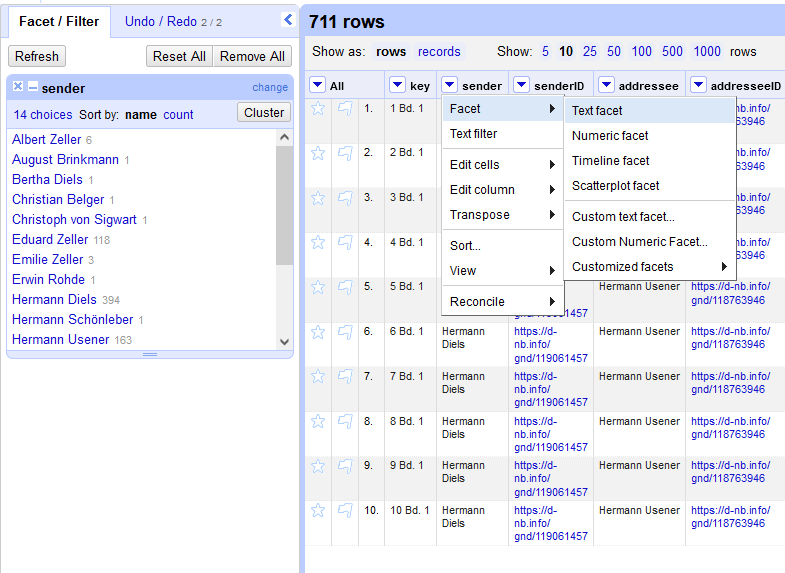value.replace(value,
"NAME DES ABSENDERS"). Die Personennamen sollten keine Kürzel beinhalten
und die gleiche Person gleich benannt werden. Das kann mit der Funktion Pfeil im
Spaltenkopf ➔ facet ➔ text facet überprüft werden. Gibt es mehrere Empfänger oder
Absender werden diese durch einen beliebigen Delimiter getrennt. Das richtige
Format ist „Vorname Nachname“. Falls die Angabe umgekehrt ist („Nachname,
Vorname“) kann über den GREL-Ausdruck value.match(/(.*), (.*)/).reverse().join("
") die Reihenfolge leicht korrigiert werden. Sollte es sich um eine
Briefedition handeln, bei dem die Daten für die Spalte „sender“ oder „addressee“
fehlen, weil sie im Kontext der Edition selbsterklärend sind, kann auf Basis der
jeweils anderen Spalte, die Spalte erstellt werden. Das trifft zu wenn in der
Edition Briefe von nur einer Person erfasst werden und nur die Empfänger gelistet
sind (z.B. „An Goethe“). Oder es handelt sich um einen Briefwechsel bei dem nur
die Sender aufgelistet werden (z.B. „Von Schiller). Im ersten Fall muss eine
Spalte erstellt werden, die in jeder Zeile den gleichen Namen beinhalten. Im
zweiten Fall wird die vorhandene Spalte dupliziert und die Namen mit dem/der
Briefpartner*in ersetzt. Mit folgendem GREL-Ausdruck wird die Spalte dupliziert: Pfeil
im Spaltenkopf ➔ edit column ➔ add column based on this column ➔ Expression:
value. Um die Werte mit den jeweiligen Briefpartner*innen zu
ersetzen, muss im Zwischenschritt auf Zahlen oder ein einmaliges Kürzel
zurückgegriffen werden, da sich sonst die nachfolgenden Ausdrücke gegeneinander
ausspielen: Pfeil im Spaltenkopf ➔ edit column ➔ add column based on this column ➔
Expression: value.replace("PERSON1","1").replace("PERSON2", "2").
Wenn der Schritt übersprungen und ein*e Briefparter*in mit dem Namen der anderen
Person ersetzt wird, findet sich in jeder Zeile die gleiche Person, weshalb der
Zwischenschritt mit Kürzeln unumgänglich ist. Mit einem Klick in die gewünschte
Zelle kann das Kürzel mit dem entsprechenden Namen wieder ersetzt und mit „Apply
to All Identical Cells“ bestätigt werden, sodass der gewünschte Name bei allen
identischen Zellen übernommen wird oder die Namen werden über die Textfacette und
mit „edit“ angepasst (siehe Abb. 6).
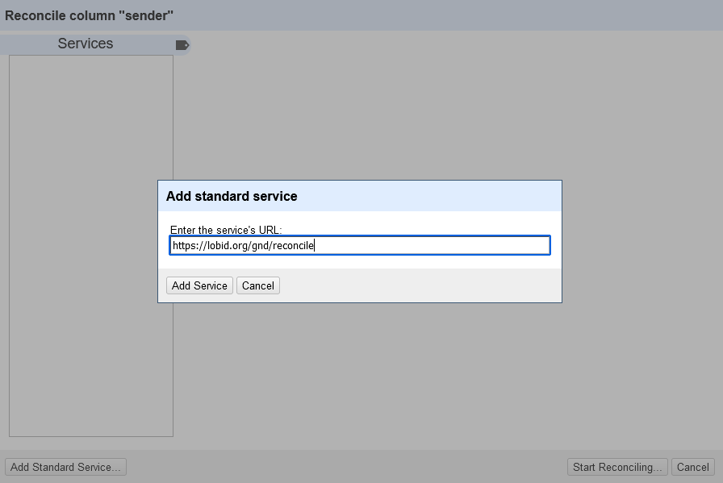 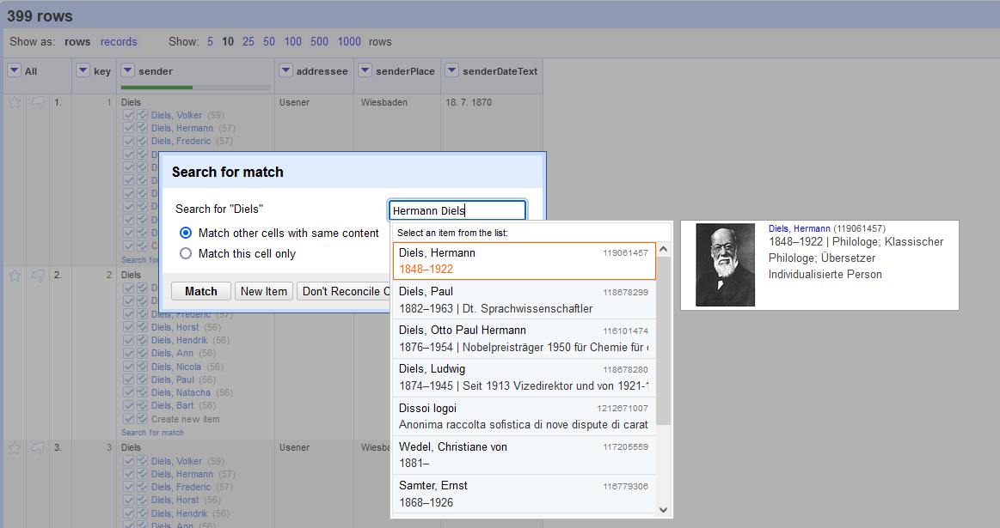 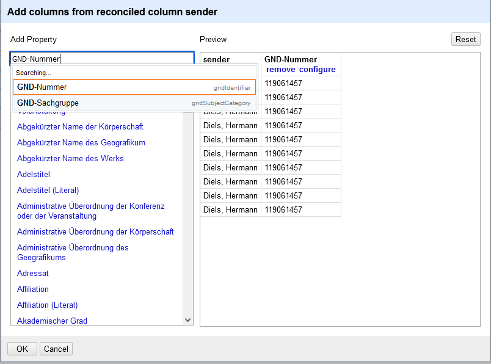"http://d-nb.info/gnd/" + value ergänzt werden. In
einigen Fällen ist es auch einfacher, auf das Plugin zu verzichten, die Spalten zu
duplizieren und die Namen mit den gewünschten URLs manuell zu ersetzen.
Datumsangaben
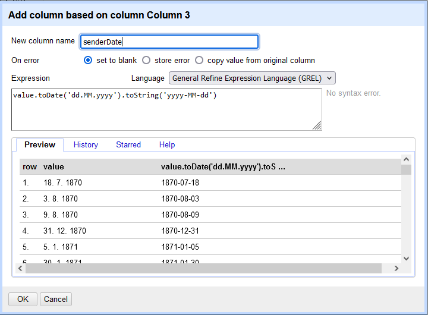yyyy-MM-dd oder yyyy-MM oder yyyy zu
bringen, bieten sich besonders häufig zwei Ausdrücke an. Um die Datumsangabe
„02.12.1890“ nach „1890-12-02“ umzuwandeln, hilft der GREL-Ausdruck
value.toDate('dd.MM.yyyy').toString('yyyy-MM-dd') (siehe
Abb. 10). Bei der Datumsangabe vom „2. Dezember 1890“ nach „1890-12-02“, ist der
GREL-Ausdruck value.toDate('dd. MMM
yyyy','dd.MM.yyyy').toString('yyyy-MM-dd') nützlich. Mithilfe der
Textfacette (siehe Abb. 6), können Datumsangaben auf Ihre Richtigkeit hin
überprüft und manuell Angaben, die nicht automatisch umgewandelt wurden (z.B.
Mitte September oder um den Tag X), korrigiert werden.
Schreibweise der Attribute in CSV2CMI :
| attribute | Format | Beispiel |
| when | yyyy-MM-dd | 1997-09-09 |
| from-to | yyyy-MM-dd/yyyy-MM-ds | 1860-03-04/1860-03-10 |
| notBefore-notAfter | [yyyy-MM-dd..yyyy-MM-dd] | [1667-03-01..1667-06-15] |
| notBefore | [yyyy-MM-dd..] | [1667-09-29..] |
| notAfter | [..yyyy-MM-dd] | [..1867-09-29] |
- ermittelt: 1669-05-03~
- vermutlich (?): 1667%
Anpassungen an moderne Technologien
Die Fortschritte im Bereich des maschinellen Lernens greift auch die OpenRefine-Community auf. Michael Markert entwickelte ein „OR-LLM-Script“, dass vor allem für Spalten mit längeren Textblöcken wie etwa Kurzbiografien relevant ist und lokal auf dem Rechner die Daten auswertet. Das geschieht mithilfe eines Large Language Models (LLM) und einer API, die bei der Named-Entity Recognition (NER) Datenbereinigung und inhaltliche Anreicherung unterstützen (Markert 2024). Durch die Anwendung eines LLM in OpenRefine können große Mengen an Textdaten automatisiert analysiert werden. Das LLM erkennt Entitäten wie Namen, Datumsangaben und Orte und extrahiert diese. Für die Digital Humanities bietet das die Möglichkeit Informationen auf Brieftexten oder Kurzbiografien automatisiert zu erschließen. Die historischen Informationen können auf neue Weise auffindbar gemacht und ausgewertet werden, was der historischen Forschung neue Perspektiven aufzeigt. Ein Workflow könnte so aussehen, dass mit OpenRefine die Daten bereinigt werden, mit LLMs oder NER-APIs Namen von Personen, Körperschaften, Orten und weitere Entitäten erkannt werden, diese Entitäten dann mittels Reconciliation mit Referenzdatensätzen von der GND oder Wikidata abgeglichen und die so aufbereiteten Daten exportiert und in Datenbanken integriert werden.
Fazit
OpenRefine ist gut dafür geeignet große Mengen an Metadaten zu bereinigen und zu strukturieren. Die Stärken von OpenRefine liegen in seiner Fähigkeit, unstrukturierte Daten in strukturierte zu überführen und mit Metadaten anzureichern. Auch ist die Skriptsprache GREL von OpenRefine einfacher zu lernen als Programmiersprachen wie Python. Zukünftig sind weitere Entwicklungen im Bereich des maschinellen Lernens zu erwarten, die neue Möglichkeiten bei der Arbeit mit OpenRefine aufzeigen werden.
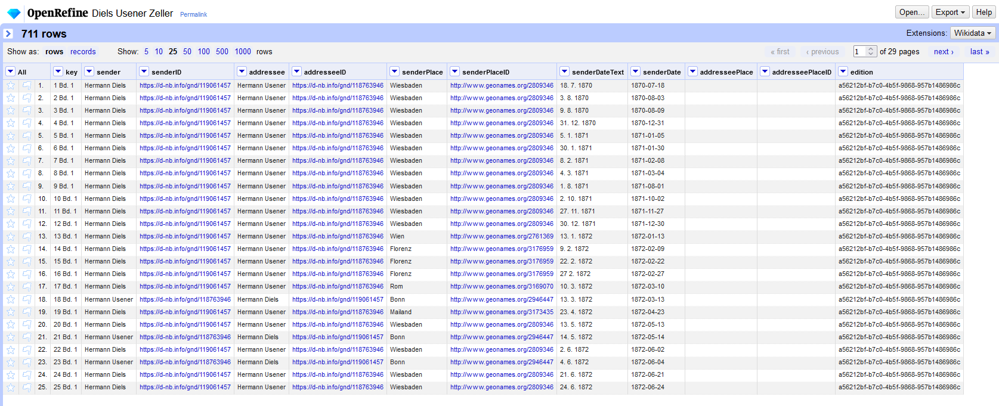
Trotz der vielen Vorteile erfordert OpenRefine eine gewisse Einarbeitungszeit. Kleinere Datensätze lassen sich möglicherweise effizienter mit anderen Methoden bereinigen. Insgesamt stellt OpenRefine eine wertvolle Ressource dar, um die Qualität und Interoperabilität von Metadaten zu verbessern und die Arbeit mit historischen Daten und Editionen zu erleichtern.
Bibliography
- Dreßen, Angela, Elodie Sacher. 2023. “Querying Art History Data on the Web (5): Modelling Data with OpenRefine.“ In Querying Museum and Art History Data on the Web. DOI: 10.22032/dbt.55804.
- Dumont, Stefan, Sascha Grabsch, Jonas Müller-Laackman, Ruth Sander und Steven Sobkowski, Hg. 2025. correspSearch – Briefeditionen vernetzen (v3.1.0) [Webservice]. Berlin-Brandenburgische Akademie der Wissenschaften. https://correspSearch.net, abgerufen am 14.05.2025.
- Ehlers, Dietrich, Hg. 1992: „Hermann Diels, Hermann Usener, Eduard Zeller: Briefwechsel”. Berlin, Boston: Akademie Verlag. DOI: 10.1515/9783050066752.
- FactGrid, Hg. 2023: „Help:OpenRefine für FactGrid”. https://web.archive.org/web/20251219093658/https://database.factgrid.de/wiki/Help:OpenRefine_f%C3%BCr_FactGrid, abgerufen am 14.05.2025.
- GitHub: OpenRefine. https://github.com/OpenRefine, abgerufen am 31.10.2024.
- Hochschulbibliothekszentrum des Landes NRW, Hg. o. J. lobid.org. https://lobid.org/, abgerufen am 31.10.2024.
- Markert, Michael. 2024. Tutorial zur Nutzung eines lokalen LLM in OpenRefine für NER, Bereinigung, Anreicherung. https://www.youtube.com/watch?v=jQLcthiOli8, abgerufen am 31.10.2024.
- OpenRefine (Hg.): OpenRefine user manual. https://openrefine.org/docs, abgerufen am 31.10.2024.
- Rettinghaus, Klaus unter Mitarbeit von Uwe Kretschmer, Jana Dolan und Sophie Schneider. 2025. CSV2CMI (v2.2.1) [Software]. Zenodo. DOI: 10.5281/zenodo.15350911.
- Sächsische Akademie der Wissenschaften zu Leipzig, Hg. o. J. csv2cmi webservice. https://cmif.saw-leipzig.de/, abgerufen am 31.10.2024.
- Steeg, Fabian, Adrian Pohl. 2018. „GND reconciliation for OpenRefine”. https://web.archive.org/web/20251219093136/https://blog.lobid.org/2018/08/27/openrefine.html.
- TEI Correspondence Special Interest Group, Hg. 2025. Correspondence Metadata Interchange Format (CMIF). https://github.com/TEI-Correspondence-SIG/CMIF, abgerufen am 14.05.2025.
- Wikimedia Foundation, Hg. 2024. OpenRefine for Wikidata: the basics. https://app.learn.wiki/learning/course/course-v1:WikimediaFoundation+WMF_GLAM001+2024/home, abgerufen am 14.05.2025.
Notes
- GitHub: OpenRefine. URL: https://github.com/OpenRefine, zuletzt geprüft am 31.10.2024. ↑
- OpenRefine Project History. URL: https://web.archive.org/web/20241114231340/https://openrefine.org/openrefine_history. ↑
- OpenRefine user manual. URL: https://openrefine.org/docs, zuletzt geprüft am 31.10.2024. ↑
- Installing OpenRefine. URL: https://web.archive.org/web/20241119005214/https://openrefine.org/docs/manual/installing. ↑
- OpenRefine: External resources. URL: https://web.archive.org/web/20251020144710/https://openrefine.org/external_resources. ↑
- GitHub: Large text facets are excruciatingly slow, https://web.archive.org/web/20260211094721/https://github.com/OpenRefine/OpenRefine/issues/672. ↑
- Installing OpenRefine. URL: https://web.archive.org/web/20250521112744/https://openrefine.org/docs/manual/installing. ↑
- OpenRefine: General Refine Expression Language. URL: https://web.archive.org/web/20241007103332/https://openrefine.org/docs/manual/grel. ↑
- OpenRefine: Reconciling. URL: https://web.archive.org/web/20241011204547/https://openrefine.org/docs/manual/reconciling. ↑
- Siehe https://correspsearch.net/de/suche.html?e=eb06446e-0c72-4cbf-8c56-b06fcc252610 für das Suchergebnis des hier konvertierten Briefverzeichnisses in correspSearch (abgerufen am 15.05.2025). ↑
@article{openrefine,
author = {Küster, Marthe},
title = {OpenRefine},
journal = {RIDE – A review journal for digital editions and resources},
number = {19},
year = {2026},
doi = {10.18716/ride.a.19.3},
url = {https://doi.org/10.18716/ride.a.19.3},
}TY - JOUR
AU - Küster, Marthe
TI - OpenRefine
T2 - RIDE – A review journal for digital editions and resources
IS - 19
PY - 2026
DA - 2026/02
DO - 10.18716/ride.a.19.3
UR - https://doi.org/10.18716/ride.a.19.3
PB - Institut für Dokumentologie und Editorik e.V.
LA - de
ER - Küster, M. (2026). OpenRefine. RIDE – A review journal for digital editions and resources, (19). https://doi.org/10.18716/ride.a.19.3Küster, Marthe. "OpenRefine." RIDE – A review journal for digital editions and resources, no. 19, 2026. https://doi.org/10.18716/ride.a.19.3.Küster, Marthe. "OpenRefine." RIDE – A review journal for digital editions and resources, no. 19 (2026). https://doi.org/10.18716/ride.a.19.3.